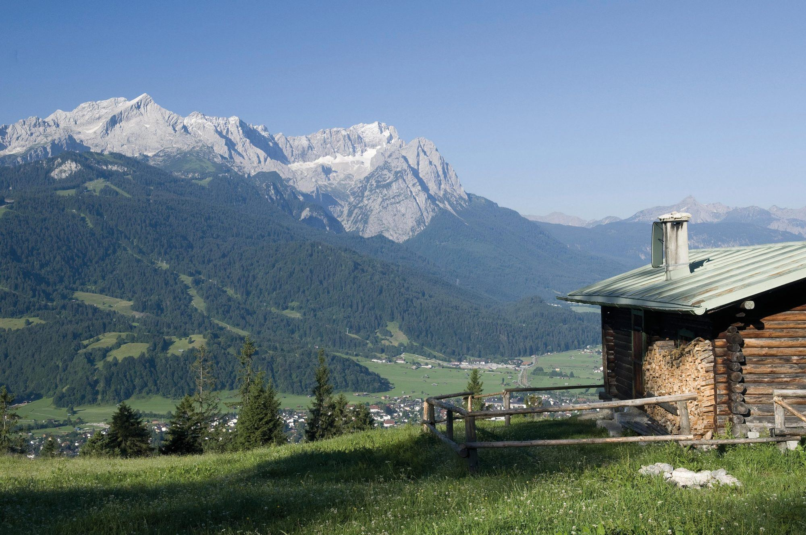
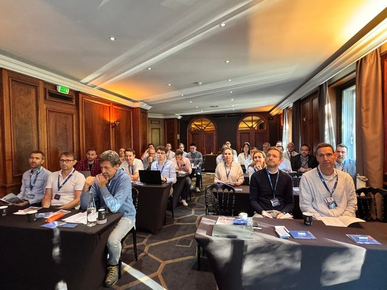
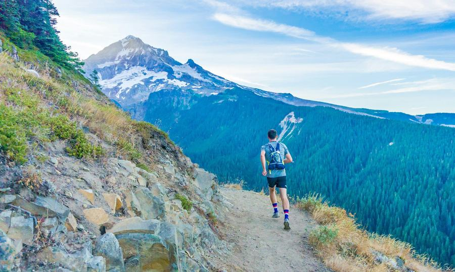

Alpine Finance Summit
Where Finance and Nature’s Beauty Converge: Enjoy the Combination of Academic Research and Adventure.
Top-tier research.
Alpine summits.
The Alpine Finance Summit (AFS) is an exclusive and high-caliber conference devoted to the presentation and discussion of academic finance working papers.
Similar to the vision of “winter finance conferences”, particular focus is devoted to a social program for summer outdoor activities, such as hiking, trail running or climbing on a via ferrata. The AFS is jointly organized by finance professors from universities across the Alpine region and traditionally takes place in the mountains.


Four fields, one summit
We welcome empirical, experimental, and theoretical contributions which have not been published in a scientific journal.
Asset Pricing
Investments
Sustainable Finance
Financial Technology

Papers in the morning. Peaks in the afternoon.
Trail runs, hiking tours, a via ferrata and a seminar in a mountain hut — all participants are encouraged to join.

Prof. Richard B. Evans
C. Stewart Sheppard Professor of Business Administration, University of Virginia Darden School of Business.
Keynote: “Investment Advisors, Fund Managers, Incentives and Effort”.
About the speaker